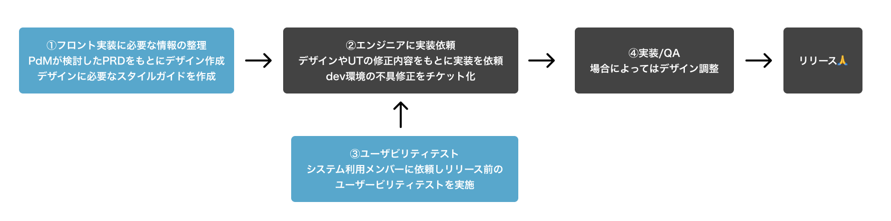

概要
各ステークホルダーに必要な支払いをし、会社として必要な計上・処理をするためのシステム設計に伴い、エンジニアのみで実装されていたシステムにデザイナーとしてアサインされた案件。UIフレームワークをベースにデザインのトンマナの調整・WFの作成・社内リリース前のユーザビリティテストを実施。
- ワークフロー
- ①フロント実装に必要な情報の整理PdMが検討したPRDをもとにデザイン作成デザインに必要なスタイルガイドを作成
- ②エンジニアに実装依頼デザインやUTの修正内容をもとに実装を依頼dev環境の不具修正をチケット化
- ③ユーザビリティテストシステム利用メンバーに依頼しリリース前のユーザービリティテストを実施、テスト内容を設計
- ④実装/QA：場合によってはデザイン調整
- 
案件でのアウトプット
- 【支払請求基盤 デザイン定義】
- フロントエンド専任のエンジニアがいなかったことを背景に、実装時にユーザビリティに配慮できていない状況であったことを背景に、最低限守りたいデザイン仕様・カラー・コンポーネントの挙動を定義

- 【ユーザビリティテスト設計】
- 社内利用のサービスであったことから当初は作ったものをそのままリリースする判断がなされる予定ではあったが、PdMと確認してリリース前の不備を解消する目的でユーザビリティテストを実施。挙がった課題はリリース前に解消すべきこと・リリース後に解消すべきことをphごとに整理してエンジニア・PdMと優先度付けをしながら対応。